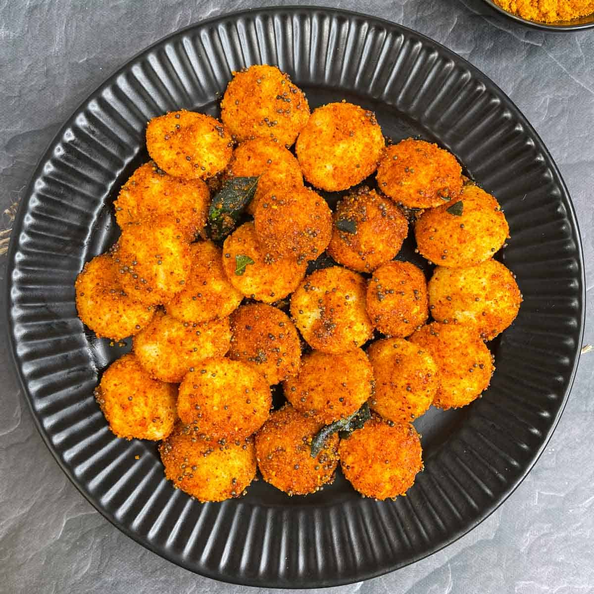
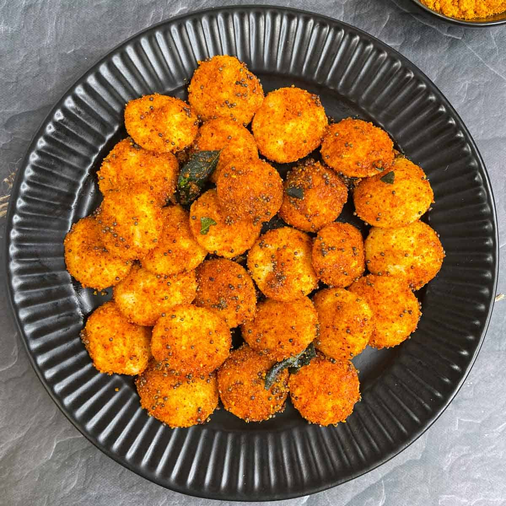

The South Indian Cafe
Welcome to "Savoring Tradition," an authentic South Indian restaurant that transports you to a bygone era of culinary excellence. Nestled in the heart of Bengaluru, our establishment proudly stands as a bastion of old-school charm and timeless flavors. Step into our welcoming haven, where the rich tapestry of South Indian culture is interwoven with the aromatic allure of spices and the rhythmic cadence of traditional music. Our restaurant is a homage to the culinary heritage of the region, meticulously preserving recipes passed down through generations. At "Savoring Tradition," each dish is a labor of love, prepared with utmost care and devotion to capture the essence of South Indian cuisine. From the crispy dosas to the flavorful curries, every bite reflects the authenticity and passion that define our kitchen. Our ambiance pays tribute to a bygone era, with warm, earthy tones, and rustic decor that echoes the timeless charm of South Indian households. The friendly chatter of families and the tantalizing scent of spices in the air create an atmosphere that transcends time, inviting you to experience the nostalgia of a home-cooked meal. Immerse yourself in the symphony of flavors that have stood the test of time. "Savoring Tradition" is not just a restaurant; it's a journey into the heart of South India's culinary legacy. Come, dine with us, and let the taste of tradition linger on your palate.
Culinary panorama
 
